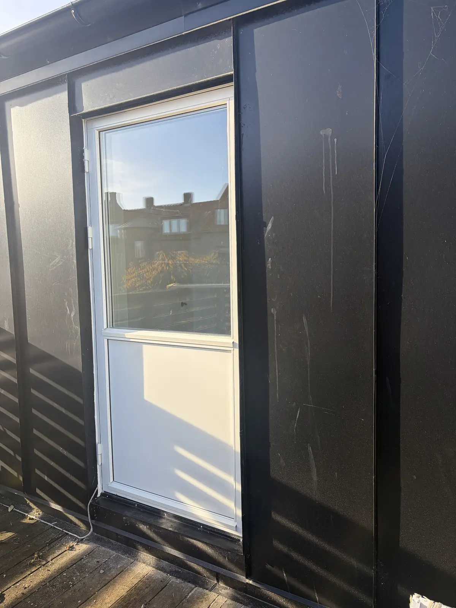

Kontakt
Berätta vad du vill renovera och vilka önskemål du har för ditt hem.
ROT & renovering
Dags att förnya ditt hem? Jag hjälper dig med allt från mindre snickeriarbeten till större renoveringar och ombyggnationer.
Med över 10 års erfarenhet inom byggbranschen erbjuder jag ett personligt och noggrant hantverk, anpassat efter ditt hus och dina önskemål.

Förnya ditt hem
Ett hem förändras genom åren. Kanske behöver planlösningen anpassas, slitna ytskikt bytas ut eller äldre konstruktioner renoveras. Oavsett projektets storlek hjälper jag dig att hitta praktiska och genomtänkta lösningar.
Som lokal snickare och byggfirma i Ängelholm erbjuder jag både invändiga och utvändiga renoveringar. Jag arbetar med såväl äldre fastigheter som moderna bostäder, med respekt för husets befintliga konstruktion och karaktär.
Du får personlig kontakt direkt med mig som utför snickeriarbetet. Vi går tillsammans igenom dina önskemål och förutsättningarna för projektet.
Från idé till färdigt resultat
Berätta vad du vill renovera och vilka önskemål du har för ditt hem.
Vi går igenom arbetets omfattning, förutsättningar och materialval. Du får en kostnadsfri offert.
När vi är överens planerar jag arbetet och genomför renoveringen enligt vår överenskommelse.
Vi går tillsammans igenom det färdiga arbetet.
ROT-avdrag
Som privatperson kan du ha rätt till ROT-avdrag när du anlitar ett företag för reparation, ombyggnad eller tillbyggnad av din bostad.
ROT-avdraget gäller för godkända arbetskostnader, inte för material, resor eller andra kringkostnader. Vilka arbeten som omfattas beror på projektets och bostadens förutsättningar.
F. Bergstrand Bygg AB är godkänt för F-skatt och jag hjälper dig med hanteringen av ROT-avdraget när arbetet uppfyller Skatteverkets villkor.
Läs mer hos Skatteverket ↗Vanliga frågor
Kostnaden beror på arbetets omfattning, materialval och fastighetens skick. Kontakta mig så går vi igenom ditt projekt och tar fram en kostnadsfri offert.
Ja, jag hjälper till med både mindre snickeriarbeten och större renoveringar. Du är välkommen att höra av dig oavsett projektets storlek.
Många renoveringsarbeten kan omfattas av ROT-avdrag. Det förutsätter att både arbetet och du som kund uppfyller Skatteverkets aktuella villkor. Jag hjälper dig med hanteringen.
Ja, jag utför ombyggnationer och förändringar av invändiga utrymmen. Vid ingrepp i bärande konstruktioner behöver vi först säkerställa att rätt konstruktionsunderlag och eventuella myndighetsbeslut finns.
Ja, jag hjälper till med renoveringar och snickeriarbeten i äldre fastigheter, med hänsyn till husets konstruktion, material och befintliga karaktär.
Ja, jag arbetar även i bland annat Båstad, Höganäs, Helsingborg och Klippan samt upp mot Halmstad och ner mot Landskrona.
Tidigare arbeten

Ett exempel på hur ett enskilt renoveringsarbete kan förnya en befintlig fastighet.
Fler byggtjänster
Utöver renoveringar hjälper jag även till med andra byggprojekt, både inne och ute.
Köksrenovering → Altaner & uteplatser → Staket & grindar Fönster & dörrar Tillbyggnader Se alla byggtjänster →Kostnadsfri offert
Hör av dig och berätta om ditt projekt. Jag hjälper dig gärna med både mindre renoveringar och större ombyggnationer.
F. Bergstrand Bygg AB
Ängelholm